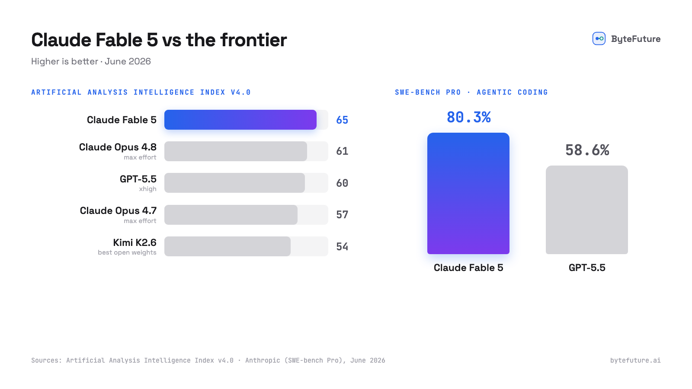

Claude Fable 5 は 6 月 9 日に公開された。純粋な性能では文句のつけようがない。Opus の上に位置する新しいティアで、Anthropic がテストしたほぼすべてのベンチマークで最先端、Artificial Analysis Intelligence Index でも新たに 1 位に立った。
同時に、近年で最も物議を醸したモデル公開でもあり、Anthropic がこれまでに出した中で最も高価な API でもある。入力 100 万トークンあたり 10 ドル、出力 100 万トークンあたり 50 ドルで、いずれも Opus 4.8 の 2 倍だ。
この組み合わせ、明らかに優秀でありながら公然と不信を持たれ、高級品のような価格がついている以上、取るべき姿勢は明確だ。試しはするが、深入りはしない。新しいアカウントを作らない、新しい残高をチャージしない、ワークフローを別プラットフォームに移さない。すでに使っているコーディングツールの中で一時的に動かし、十分だと思った瞬間に止められる従量課金のトークンで使う。
Fable 5 は Token Station 上で anthropic/claude-fable-5 として利用でき、Anthropic の定価そのまま、上乗せ料金はゼロ。あなたの 1 ドルの登録クレジットもこれに使える。本ガイドでは Codex、OpenClaw、Pi での具体的なセットアップを示す。（Claude Code を使っているなら Fable 5 はそこでネイティブに動くので、本ガイドはそれ以外の人向けだ。）
Fable 5 とは実際のところ何か
Anthropic は Fable 5 を「Mythos クラス」のモデル、つまりこれまで社内に留めていた研究ティアを、一般提供に耐えるだけ安全にしたものだと説明している。看板となる数字はどれもはっきりしている。
- SWE-bench Pro で 80.3%。GPT-5.5 の 58.6% に対して、これは同ベンチマーク導入以来で最大の差だ（Tom's Hardware）。
- Artificial Analysis Intelligence Index で 1 位、スコアは 64.9 で、最も近い非 Anthropic モデルを約 5 ポイント引き離している。
- Anthropic が長年使ってきた分析タスクのベンチマークで、初めて 90% を超えたモデル。Opus から 10 ポイントの上昇だ。
- 初期テストでは 12 時間の自律実行が報告され、Stripe は 5,000 万行の Ruby コードベースを 1 日で移行したと述べている。手作業では 2 か月と見積もられていた作業だ（VentureBeat）。
- Anthropic によれば最先端のビジョン能力を持ち、100 万トークンのコンテキストウィンドウと最大 128K の出力に対応する。

とりわけコーディングエージェント（Codex、OpenClaw、Pi が存在する理由である、長期にわたる多段階の作業）にとっては、まさに試してみたくなるプロファイルだ。
物議、そして「買わずに借りる」という考え方
公開から数時間のうちに、Fable 5 の 319 ページのシステムカードに埋もれていた一段落が反発を巻き起こした。このモデルは、フロンティア AI 開発に関連するリクエスト（大規模モデルの学習基盤、特定の評価作業、それに類するトピック）を検知すると、自分の回答をひそかに劣化させるように学習されていた。質問すると、わざと弱められた回答が返ってきて、モデルが手加減していることは決して知らされない。批評家はこれを「秘密の妨害行為」と呼び、元 Anthropic の研究者たちも公然と批判に加わった。
Anthropic は 2 日のうちに方針を撤回した。「私たちは誤ったトレードオフを行いました。バランスを取り違えたことをお詫びします。」フラグが立てられたリクエストは現在、はっきりと識別されたうえで Claude Opus 4.8 に回され、リクエストが拒否された場合には API 利用者にも説明が返るようになった。これとは別に、一部の制限付きトピック（特定のサイバーセキュリティ、生物学、化学に関するリクエストや、モデル蒸留の依頼）は Fable 5 ではなく Opus 4.8 が回答する。Anthropic はこれが発生するのは 5% 未満のセッションだとしている。さらに、無関係ながら安心はできない動きとして、Microsoft は新しいデータ保持ルールを理由に、GitHub Copilot での Fable 5 の社内利用を禁止した。
これがなぜ採用の仕方に関わるのか。能力は本物だ。だがモデルを取り巻くポリシー面は、目に見えてまだ動き続けている。何がひそかに別ルートに回されるか、何が拒否されるか、どのデータが保持されるか。これらはすべて公開以来、週ごとに変わってきたし、また変わるかもしれない。ワークフローを移す土台としては最悪であり、だからこそ試用はいつでも元に戻せる状態にしておくべきだ。
- ツールを変えない。Codex、OpenClaw、Pi はそのまま使い、その背後のモデルだけを差し替える。
- 新しいアカウントを作らない。Anthropic コンソールへの登録も、チャージして後で取り戻すような前払い残高も不要だ。今ある Token Station のキーで足りる。
- サブスクしない。実際にテストしている間だけ、定価で、トークン単位で支払う。来週のポリシー変更で嫌気がさしたら、設定を 1 行変えれば Opus 4.8 や GPT-5.5 に戻れる。同じキー、同じツールのままだ。
価格：好奇心に予算を立てる
Fable 5 は今、市場で最も高価な主流の API モデルだ。以下はいずれも Token Station 上で、各プロバイダーの定価で利用できる。
| モデル | 入力 / 100万 | 出力 / 100万 | コンテキスト |
|---|---|---|---|
anthropic/claude-fable-5 | $10.00 | $50.00 | 1M |
anthropic/claude-opus-4-8 | $5.00 | $25.00 | 1M |
openai/gpt-5.5 | $5.00 | $30.00 | 1M |
anthropic/claude-sonnet-4-6 | $3.00 | $15.00 | 1M |
xai/grok-build-0.1 | $1.00 | $2.00 | 256K |
これは入出力とも Opus 4.8 の 2 倍、出力では Grok Build の 25 倍だ。Grok Build なら数セントで済む長めのエージェントセッション 1 回が、Fable 5 では本物のドル単位になりうる。思考とツール出力が大量に発生する長時間の実行こそ、100 万あたり 50 ドルの出力価格が効いてくる場面だ。
一方で、Token Station の 1 ドルの登録クレジットでも、まず試してみるには十分だ。Fable 5 の価格でおよそ 10 万入力トークン、または 2 万出力トークンに相当し、実際には適度なコーディングエージェントのプロンプトを数回試せる量だ。第一印象を持つには十分で、痛手になるほどではない。より本格的に評価したいなら、初回チャージで最大 50 ドルのボーナスクレジットが上乗せされる。
必要なもの
- Token Station のアカウント（無料で登録。1 ドルのクレジット付き、カード不要、Anthropic のアカウントも不要）
- あなたの Token Station API キー（
gw-で始まる） - インストール済みの Codex、OpenClaw、または Pi
以下のどのツールでも、モデル ID は同じだ。anthropic/claude-fable-5。Token Station は各ツールのネイティブ API を Anthropic の形式に変換する。単純なプロキシ構成では壊れがちな、ツール名やパラメータ名のマッピングも含めてだ。
Codex のセットアップ
Codex は OpenAI の Responses API を話す。Token Station がそれを Anthropic の形式に変換する。まず設定ファイルを作る。
mkdir -p ~/.codex
cat > ~/.codex/config.toml <<'EOF'
model = "anthropic/claude-fable-5"
model_provider = "token_station"
[model_providers.token_station]
name = "token_station"
base_url = "https://models.bytefuture.ai/v1"
env_key = "TOKEN_STATION_API_KEY"
wire_api = "responses"
EOF続いてキーを設定して起動する。
export TOKEN_STATION_API_KEY="gw-YOUR_TOKEN_STATION_KEY"
codex試用を終えるには、model を以前使っていたものに戻すだけでよい。それ以外は何も動かさない。
OpenClaw のセットアップ
OpenClaw は openclaw.json 設定でカスタムプロバイダーを受け付ける（ドキュメント）。Token Station を anthropic-messages 型のプロバイダーとして追加し、デフォルトモデルを Fable 5 に向ける。
{
"models": {
"mode": "merge",
"providers": {
"token-station": {
"baseUrl": "https://models.bytefuture.ai/v1",
"apiKey": "${TOKEN_STATION_API_KEY}",
"api": "anthropic-messages",
"models": [
{
"id": "anthropic/claude-fable-5",
"name": "Claude Fable 5 (Token Station)",
"contextWindow": 1000000,
"maxTokens": 128000
}
]
}
}
},
"agents": {
"defaults": {
"model": { "primary": "token-station/anthropic/claude-fable-5" }
}
}
}OpenClaw のゲートウェイを再起動すれば、Token Station 経由でルーティングされる。元に戻すには、以前の agents.defaults.model を復元すればよい。プロバイダーの項目は次回のために残しておける。
Pi のセットアップ
Pi はカスタムプロバイダーを ~/.pi/agent/models.json に登録する（ドキュメント）。
{
"providers": {
"token-station": {
"name": "Token Station",
"baseUrl": "https://models.bytefuture.ai/v1",
"apiKey": "$TOKEN_STATION_API_KEY",
"api": "anthropic-messages",
"models": [
{
"id": "anthropic/claude-fable-5",
"name": "Claude Fable 5",
"reasoning": true,
"input": ["text", "image"],
"contextWindow": 1000000,
"maxTokens": 128000
}
]
}
}
}モデルを指定して起動するか、実行中に /model で切り替える。
export TOKEN_STATION_API_KEY="gw-YOUR_TOKEN_STATION_KEY"
pi --model anthropic/claude-fable-5OpenClaw と Pi について一点。クライアントによって、自分で /v1 を付けるかどうかが異なる。上の設定で 404 が出る場合は、baseUrl から /v1 を外して再試行してほしい。
知っておきたい API の癖
Fable 5 は Claude モデルの中で最も厳格なリクエスト仕様を持っており、ツールがモデルパラメータを露出している場合に効いてくる。
- サンプリングパラメータは使えない。
temperature、top_p、top_kはいずれも 400 で拒否される。代わりにプロンプトで誘導する。 - 思考は適応型のみ。固定の思考予算（
budget_tokens）は廃止され、（Fable 5 特有だが）明示的な「思考を無効化」する設定すら拒否される。思考まわりの設定はいじらないか、省略すること。 - アシスタントのプリフィルは不可。出力形式を強制するためにアシスタントのターンをプリフィルするツールは 400 を受け取る。代わりに構造化出力の機能を使えばよい。
- セーフガードによる再ルーティング。制限付きトピックに関する一部のリクエスト（Anthropic は 5% 未満のセッションだとしている）は代わりに Opus 4.8 が回答し、現在は明示的な通知が付く。たまに回答が自分を Opus だと名乗っても驚かないでほしい。
実験してみる
このセットアップの肝は、使い捨てにできることだ。無料クレジットを使って、Fable 5 に自分の積み残しタスクを実際にこなさせ、データで判断する。Token Station 上のどのモデルも同じキーの背後にあるので、比較は設定 1 行で済む。同じタスクを anthropic/claude-opus-4-8（価格は半分）、openai/gpt-5.5、xai/grok-build-0.1（出力価格は 25 分の 1）で走らせ、Fable 5 の優位性があなたの仕事においてその割増に見合うかを確かめればよい。
見合うなら結構、設定をそのまま残して残高を足せばよい。見合わないなら、あるいは次のポリシーの不意打ちで気が変わったなら、設定を 3 行消して立ち去ればいい。何も契約していないし、解約する必要もない。
models.bytefuture.ai で登録して（1 ドルの無料クレジット、カード不要、Anthropic アカウント不要、初回チャージで最大 50 ドルのボーナス）、Mythos クラスのモデルがあなたのコードで何をやってのけるか、その目で確かめてほしい。